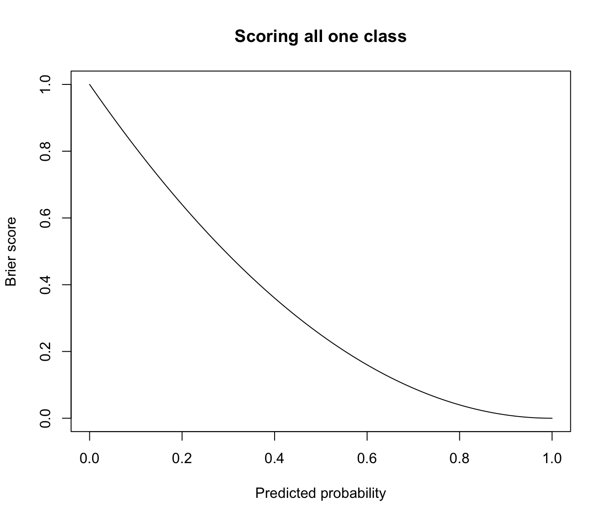
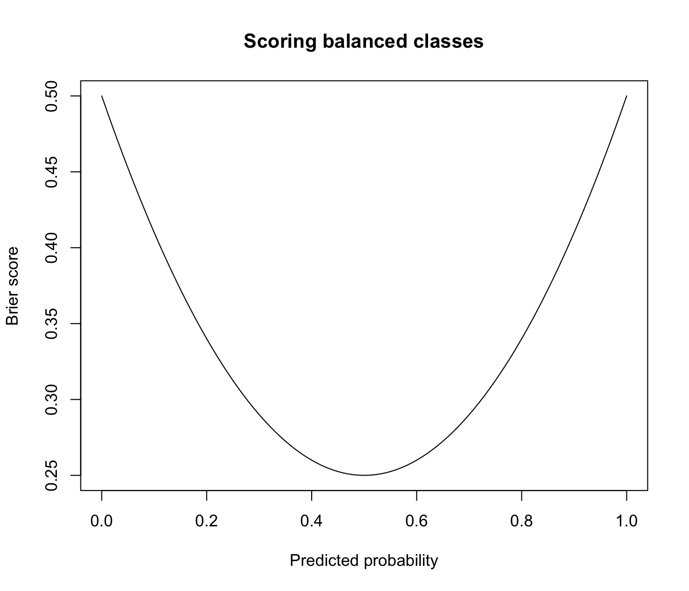
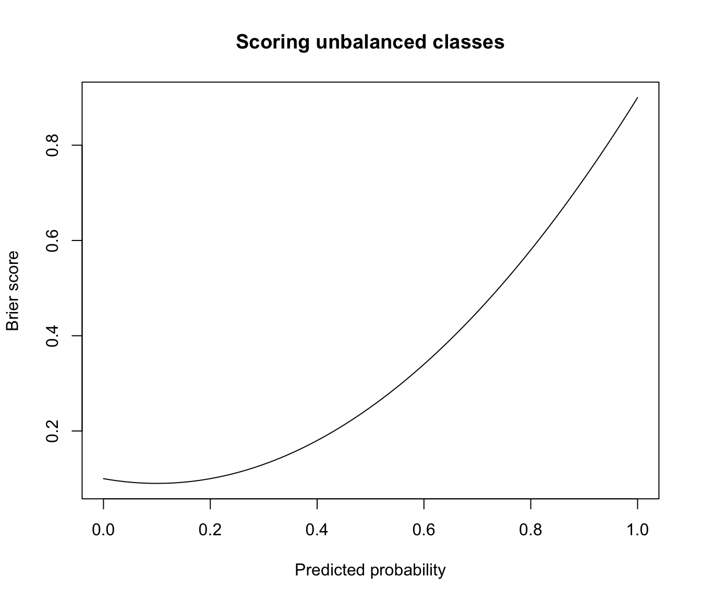

Brier score to assess the accuracy of probabilistic predictions
BrierScore.RdThe Brier score is a proper score function that measures the accuracy of probabilistic predictions.
Arguments
- z
a matrix containing the predicted probabilities of each observation to be classified in one of the classes. Thus, the number of rows must match the length of
class, and the number of columns the number of known classes.- class
a numeric, character vector or factor containing the known class labels for each observation. If
classis a factor, the number of classes isnlevels(class)with classeslevels(class). Ifclassis a numeric or character vector, the number of classes is equal to the number of classes obtained viaunique(class).
Details
The Brier Score is the mean square difference between the true classes and the predicted probabilities.
This function implements the original multi-class definition by Brier (1950), normalized to \([0,1]\) as in Kruppa et al (2014). The formula is the following: $$ BS = \frac{1}{2n} \sum_{i=1}^n \sum_{k=1}^K (C_{ik} - p_{ik})^2 $$ where \(n\) is the number of observations, \(K\) the number of classes, \(C_{ik} = \{0,1\}\) the indicator of class \(k\) for observation \(i\), and \(p_{ik}\) is the predicted probability of observation \(i\) to belong to class \(k\).
The above formulation is applicable to multi-class predictions, including the binary case. A small value of the Brier Score indicates high prediction accuracy.
The Brier Score is a strictly proper score (Gneiting and Raftery, 2007), which means that it takes its minimal value only when the predicted probabilities match the empirical probabilities.
References
Brier, G.W. (1950) Verification of forecasts expressed in terms of probability. Monthly Weather Review, 78 (1): 1-3.
Gneiting, G. and Raftery, A. E. (2007) Strictly proper scoring rules, prediction, and estimation. Journal of the American Statistical Association 102 (477): 359-378.
Kruppa, J., Liu, Y., Diener, H.-C., Holste, T., Weimar, C., Koonig, I. R., and Ziegler, A. (2014) Probability estimation with machine learning methods for dichotomous and multicategory outcome: Applications. Biometrical Journal, 56 (4): 564-583.
Examples
# multi-class case
class <- factor(c(5,5,5,2,5,3,1,2,1,1), levels = 1:5)
probs <- matrix(c(0.15, 0.01, 0.08, 0.23, 0.01, 0.23, 0.59, 0.02, 0.38, 0.45,
0.36, 0.05, 0.30, 0.46, 0.15, 0.13, 0.06, 0.19, 0.27, 0.17,
0.40, 0.34, 0.18, 0.04, 0.47, 0.34, 0.32, 0.01, 0.03, 0.11,
0.04, 0.04, 0.09, 0.05, 0.28, 0.27, 0.02, 0.03, 0.12, 0.25,
0.05, 0.56, 0.35, 0.22, 0.09, 0.03, 0.01, 0.75, 0.20, 0.02),
nrow = 10, ncol = 5)
cbind(class, probs, map = map(probs))
#> class map
#> [1,] 5 0.15 0.36 0.40 0.04 0.05 3
#> [2,] 5 0.01 0.05 0.34 0.04 0.56 5
#> [3,] 5 0.08 0.30 0.18 0.09 0.35 5
#> [4,] 2 0.23 0.46 0.04 0.05 0.22 2
#> [5,] 5 0.01 0.15 0.47 0.28 0.09 3
#> [6,] 3 0.23 0.13 0.34 0.27 0.03 3
#> [7,] 1 0.59 0.06 0.32 0.02 0.01 1
#> [8,] 2 0.02 0.19 0.01 0.03 0.75 5
#> [9,] 1 0.38 0.27 0.03 0.12 0.20 1
#> [10,] 1 0.45 0.17 0.11 0.25 0.02 1
BrierScore(probs, class)
#> [1] 0.33144
# two-class case
class <- factor(c(1,1,1,2,2,1,1,2,1,1), levels = 1:2)
probs <- matrix(c(0.91, 0.4, 0.56, 0.27, 0.37, 0.7, 0.97, 0.22, 0.68, 0.43,
0.09, 0.6, 0.44, 0.73, 0.63, 0.3, 0.03, 0.78, 0.32, 0.57),
nrow = 10, ncol = 2)
cbind(class, probs, map = map(probs))
#> class map
#> [1,] 1 0.91 0.09 1
#> [2,] 1 0.40 0.60 2
#> [3,] 1 0.56 0.44 1
#> [4,] 2 0.27 0.73 2
#> [5,] 2 0.37 0.63 2
#> [6,] 1 0.70 0.30 1
#> [7,] 1 0.97 0.03 1
#> [8,] 2 0.22 0.78 2
#> [9,] 1 0.68 0.32 1
#> [10,] 1 0.43 0.57 2
BrierScore(probs, class)
#> [1] 0.13381
# two-class case when predicted probabilities are constrained to be equal to
# 0 or 1, then the (normalized) Brier Score is equal to the classification
# error rate
probs <- ifelse(probs > 0.5, 1, 0)
cbind(class, probs, map = map(probs))
#> class map
#> [1,] 1 1 0 1
#> [2,] 1 0 1 2
#> [3,] 1 1 0 1
#> [4,] 2 0 1 2
#> [5,] 2 0 1 2
#> [6,] 1 1 0 1
#> [7,] 1 1 0 1
#> [8,] 2 0 1 2
#> [9,] 1 1 0 1
#> [10,] 1 0 1 2
BrierScore(probs, class)
#> [1] 0.2
classError(map(probs), class)$errorRate
#> [1] 0.2
# plot Brier score for predicted probabilities in range [0,1]
class <- factor(rep(1, each = 100), levels = 0:1)
prob <- seq(0, 1, by = 0.01)
brier <- sapply(prob, function(p)
{ z <- matrix(c(1-p,p), nrow = length(class), ncol = 2, byrow = TRUE)
BrierScore(z, class)
})
plot(prob, brier, type = "l", main = "Scoring all one class",
xlab = "Predicted probability", ylab = "Brier score")

# brier score for predicting balanced data with constant prob
class <- factor(rep(c(1,0), each = 50), levels = 0:1)
prob <- seq(0, 1, by = 0.01)
brier <- sapply(prob, function(p)
{ z <- matrix(c(1-p,p), nrow = length(class), ncol = 2, byrow = TRUE)
BrierScore(z, class)
})
plot(prob, brier, type = "l", main = "Scoring balanced classes",
xlab = "Predicted probability", ylab = "Brier score")

# brier score for predicting unbalanced data with constant prob
class <- factor(rep(c(0,1), times = c(90,10)), levels = 0:1)
prob <- seq(0, 1, by = 0.01)
brier <- sapply(prob, function(p)
{ z <- matrix(c(1-p,p), nrow = length(class), ncol = 2, byrow = TRUE)
BrierScore(z, class)
})
plot(prob, brier, type = "l", main = "Scoring unbalanced classes",
xlab = "Predicted probability", ylab = "Brier score")
